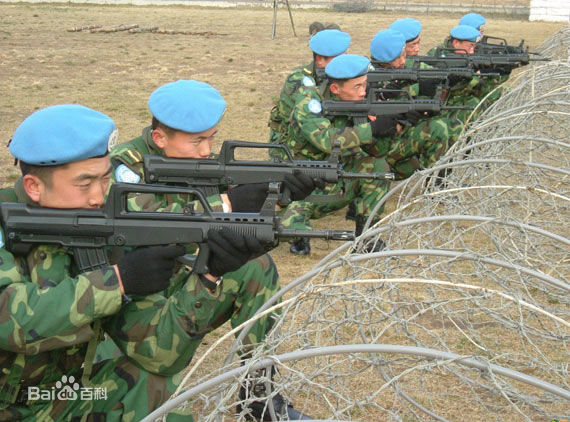

中国维和部队,是联合国维持和平部队的一个分支机构
联合国维持和平部队是根据有关联合国决议建立的跨国界的特种部队。第一支联合国维持和平部队，成立于1956年苏伊士危机之际。它受联合国大会或安全理事会的委派，活跃于国际上有冲突的地区。
维和部队士兵头戴天蓝色钢盔或蓝色贝雷帽，上有联合国英文缩写“UN”，臂章缀有“地球与橄榄枝”图案。凡参加联合国维持和平部队的人员，必须在设于北欧4国的训练中心接受特种训练，以熟悉维和部队的职能、宗旨、任务和进行特种军事训练。
1992年4月，中国军队向联合国柬埔寨临时权力机构派出由400名官兵组成的工程兵大队，开创了我军派遣成建制部队参与联合国维和行动的先河。
1992年4月至1993年9月，中国先后派遣军事工程大队两批800名官兵，参加柬埔寨过渡时期联合国权力机构的维持和平行动。这是中国政府派遣的第一支参加联合国维持和平行动的部队。
海外维和，翻译保障任务尤为繁重。翻译在场，一切都有！马里任务区的每一天，分队都需要与联马团司令部和各国友军协调各项工作。在每日交班、外事值班、工程施工等工作中都活跃着法语和英语翻译们忙碌的身影，他（她）们是分队圆满完成各项任务的桥梁纽带，被战友们称为“外交家”。
维和心语：在维和战场一线，没有特殊人群，只有特别“敌情”，只有不分级别、不分性别、不分岗位，才能人人过得硬、事事过得去。落实安全防范举措、完成翻译保障任务是任重而道远的，哪怕任何一个细节的失误，就可能造成无法挽回的后果。
维和心语：四度维和的我，面对这里的猖獗恐袭、肆虐蚊虫，这使我感到了巨大压力。作为战救负责人，我要不断提高战救指挥素养，完善各类急救预案，强化官兵战救训练，确保能在“第一时间”有效处置各类伤情